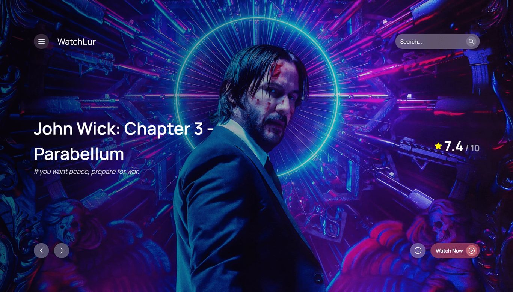
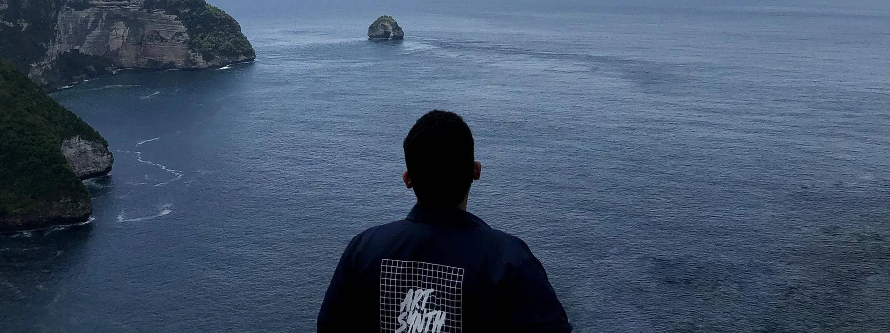

Entertainment / 01Design + Development

A world of stories.

I bring a designer’s eye to a developer’s world.
Turning complex ideas into intuitive digital
experiences—with a little character.
01 / Selected work




02 / The person behind the pixels
I’m Danis Zaidan. My curiosity started with tweaking Blogger templates. These days, it takes me from intricate dashboards to expressive digital experiences.
I care about how things work, how they feel, and the people on the other side of the screen.
03 / How I can help
Clarity before decoration.
Useful interfaces with a distinct point of view. I connect the needs of people with a visual language that feels right for the product.
Good design deserves good code.
From an expressive portfolio to a data-heavy application, I build responsive interfaces with reusable components and care for the details.
A recognisable thread, everywhere.
A cohesive visual language that carries the same character across a website, social presence, presentation, and printed touchpoint.
05 / A little method to the making
The right questions before the first pixel. Understanding your people, goals, and the problem worth solving.
Ideas become structure. Exploring directions, sketching flows, and making the important things clear.
Design and code come together. Responsive components, purposeful motion, and details that feel right.
Test, learn, and polish. From keyboard navigation to the smallest screen, quality lives in the details.
A fresh idea, a complex challenge, or a simple hello.
I’d love to hear what you have in mind.